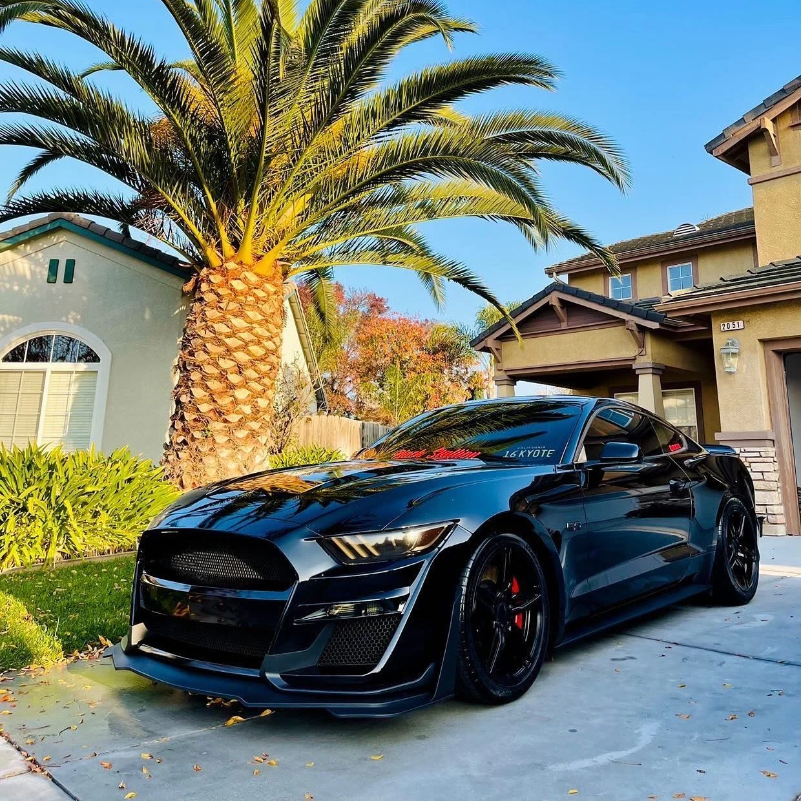
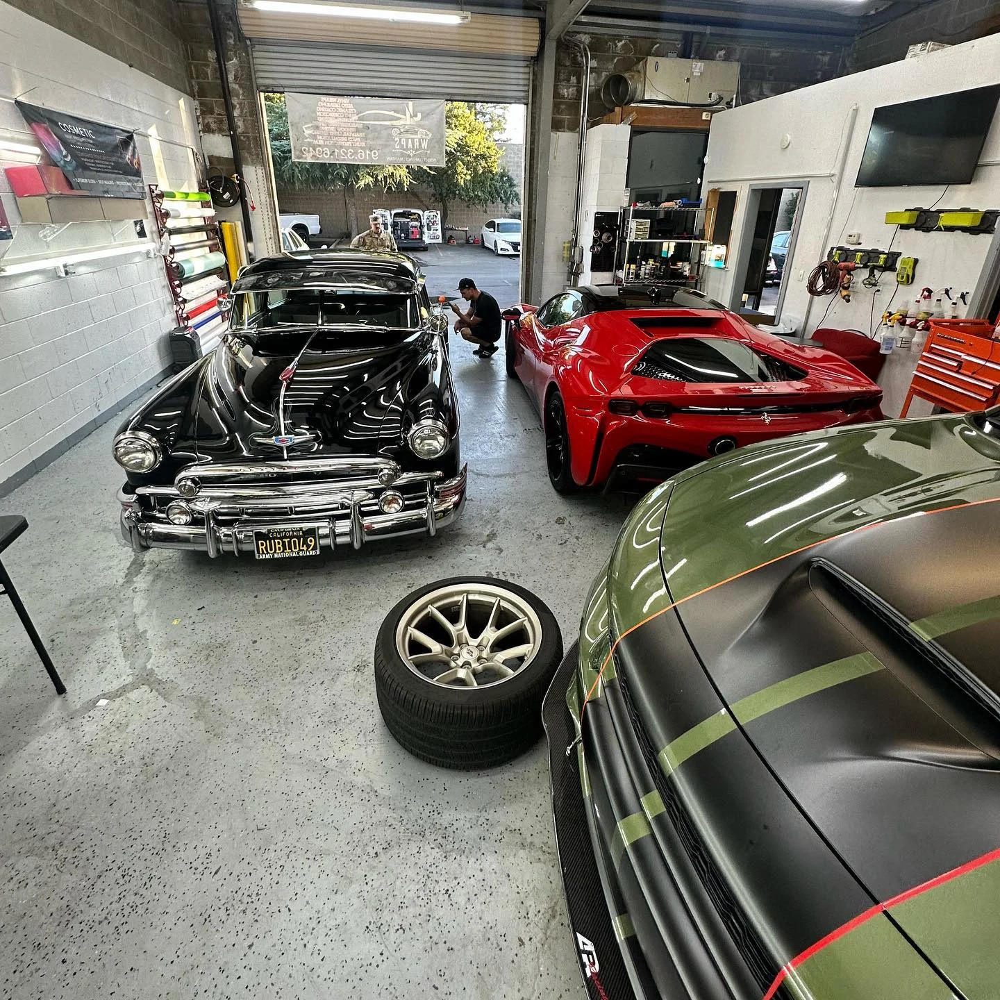
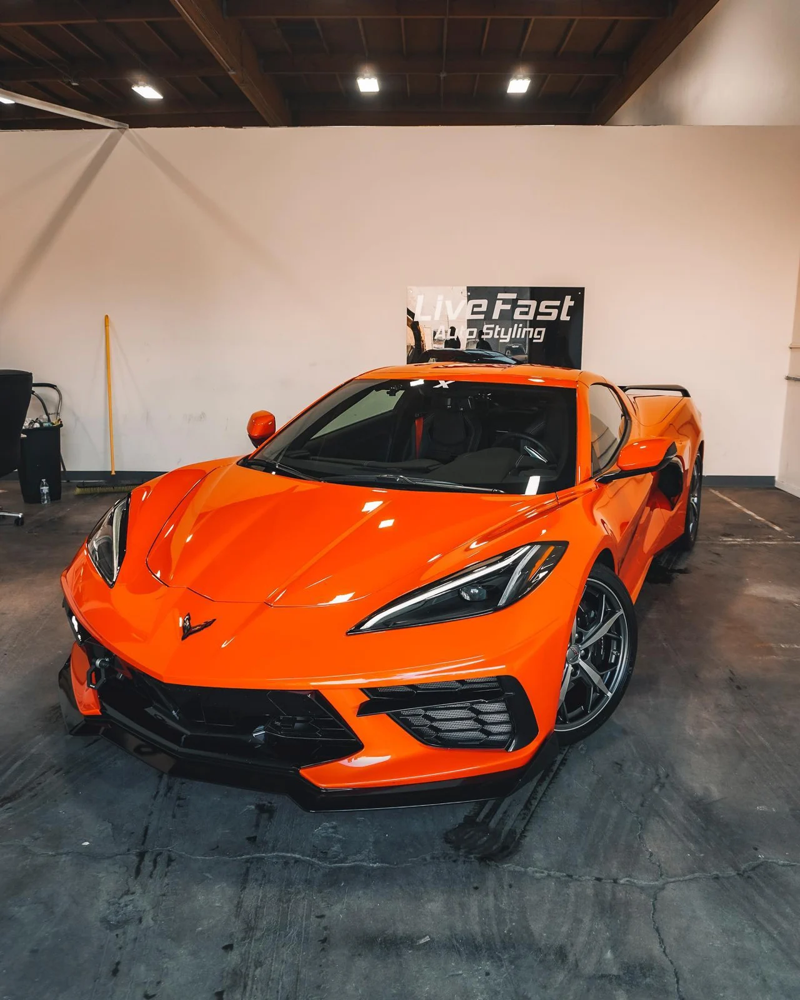
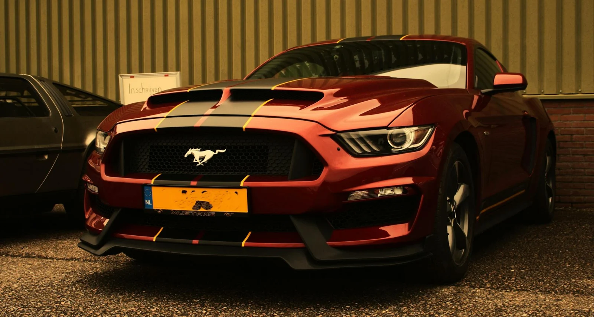

Help keep heat out
Ceramic film targets solar heat through the glass, helping take the edge off sunny California drives.

Less heat, less glare and a cleaner look. Professional ceramic window tint, installed by Black Sheep Auto Detailing in Sunnyvale.
From your morning commute to a sunny afternoon in the South Bay, ceramic tint helps make time behind the wheel more comfortable. Choose performance, privacy and a finish that suits your vehicle.
Ceramic film targets solar heat through the glass, helping take the edge off sunny California drives.
Soften bright sunlight for a more comfortable view of the road. The team can help you choose your shade.
UV-rejecting film helps reduce the exposure that contributes to fading in seats, dashboards and trim.
A clean, even shade gives your car a finished look, with options to balance privacy and visibility.
Film performance varies by product, shade and vehicle glass. Confirm the film specifications included in your $299 package with Black Sheep Auto Detailing.

Good tint starts with people who care about the finish. Black Sheep Auto Detailing is a military-owned shop serving Sunnyvale and the Santa Clara Valley. Talk to a local team about your tint, your vehicle and the finish you want. From window tint to detailing, ceramic coatings and paint protection, your car gets personal attention.
A clear offer. A local team. A finish you'll enjoy every time you walk up to your car. Here's what to know before you book.
Start with your vehicle details. Black Sheep Auto Detailing will confirm eligibility, included windows and the final package before you book.
Get more than darker glass. Ceramic film helps reduce heat and UV exposure without the metal found in older metallic films.
Visit us at 1155 Reed Ave, Suite D. We're a local choice for Sunnyvale and drivers across the Santa Clara Valley.
Clean glass, precise fitting and attention to the edges. The little details make the result feel right.
Know what you are booking. Ask the team about the installed film, included windows, aftercare and any warranty terms that apply to your package.
Talk through shade, coverage and aftercare with the team. Leave knowing how to look after your newly tinted glass.
Confirm film, glass coverage, warranty terms, old-film removal and taxes before booking.
A look inside the shop and at vehicles featured by Black Sheep. Photos show shop work and vehicle styling; individual services vary.


Customer feedback featured on the official Black Sheep website.
“I had my windows tinted there and have no complaints.”Read on Black Sheep’s website ↗
“Not only does the tint look fantastic”Read on Black Sheep’s website ↗
“Great customer service quick and reliable”Read on Black Sheep’s website ↗
Tell us what you drive. We'll help you find your shade.
Vehicle eligibility, included windows, film, warranty, removal and taxes confirmed by the shop before booking.
Prefer a conversation? (408) 915-1488 ↗Our ceramic window tint promotion is $299. Tell us your vehicle's year, make and model so the team can confirm eligibility, the included windows, installed film and any removal costs or taxes before you book.
Ceramic tint helps reduce solar heat, glare and UV exposure while adding privacy. It offers a comfort upgrade beyond simply darkening the glass. Performance depends on the chosen film and shade.
Installation timing depends on your vehicle, selected windows and any existing film removal. Black Sheep will confirm the appointment length when you book.
Tell us your priorities: comfort, privacy, glare reduction or visibility. The team can explain suitable shade options and check the requirements for your vehicle's glass.
Follow the curing and aftercare instructions provided by Black Sheep at pickup. The waiting period depends on your film and conditions; ask the installer before rolling the windows down.
Ask Black Sheep to confirm the warranty available with the installed film, the written coverage and any exclusions for your $299 package before booking.
Visit us at 1155 Reed Ave, Suite D, Sunnyvale, CA 94086, serving the Santa Clara Valley. Get directions ↗ or call (408) 915-1488.